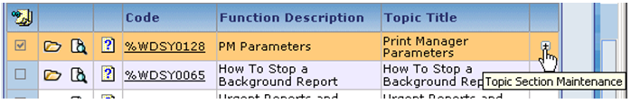
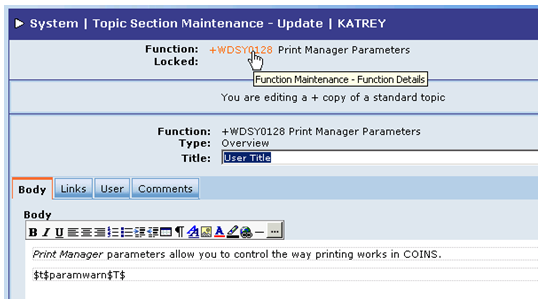

How to Create and Modify Plus Copy Topics:
- In the System module, go to Topic Maintenance. Select a topic that you want to change; for example, select "PM Parameters" under Online Documentation > System Guide > Printing (see Figure 1).
Figure 1: Selected Topic

- Select Create + version at the bottom of the screen (see Figure 2) and click Apply Action
 .
.
Figure 2: Create + version of Topic

- Click the plus (+) sign that now appears in the far right column of this topic to go to Topic Section Maintenance (see Figure 3).
Figure 3: Plus Sign for New Topic

- If the existing topic already has Process and/or Configuration sections, these sections also appear on the Topic Section Maintenance screen for the plus copy topic. Your next action depends on whether or not these sections appear here:
- If these sections do appear for the plus copy topic, it means that you may:
Select and delete a section when editing the plus copy topic. Open and modify a section for the plus copy topic.
- If these sections do not appear for the plus copy topic, it means that you have the option to add them to the plus copy topic. To do this:
Click Add at the bottom of the Topic Section Maintenance screen to take you to the Add screen (see Figure 4).
Figure 4: Topic Section Maintenance - Add screen

Select Configuration or Process in the Type field. Enter the Title you wish to use for the Configuration or Process section. Enter text for the section in the Body area. Click Save to save the section.
If you want to add whichever section you did not choose first, repeat the steps above. Otherwise, go to the next step. Click Undo when you are finished adding the section(s).
Click Next to return to the menu list. The Process and/or Configuration sections should now be added to the menu list for the new plus copy topic.
- Click Open
to open the Overview for this new plus copy topic (see Figure 5).
Figure 5: Open Topic Overview section

- If desired, you can change the Title of this plus copy topic on this screen (shown below); for example, change "Print Manager Parameters" to "User Title" (see Figure 6).
If you do this, however, it will not match the menu title; for example, it will still show as "Print Manager Parameters" on the menu rather than "User Title".
Figure 6: Topic Title change

- Modify text as necessary (or add text if not already there) for the Body section of the Overview (see Figure 7).
Figure 7: Topic Body section

- Click Save
- Click Documentation
at the bottom of the OA screen to go the OA Online Documentation Menu. Click on the new plus copy topic; for example, "Print Manager Parameters". You should see the modified title ("User Title"), if applicable, and any modified text (see Figure 8).
Figure 8: Topic on Online Menu